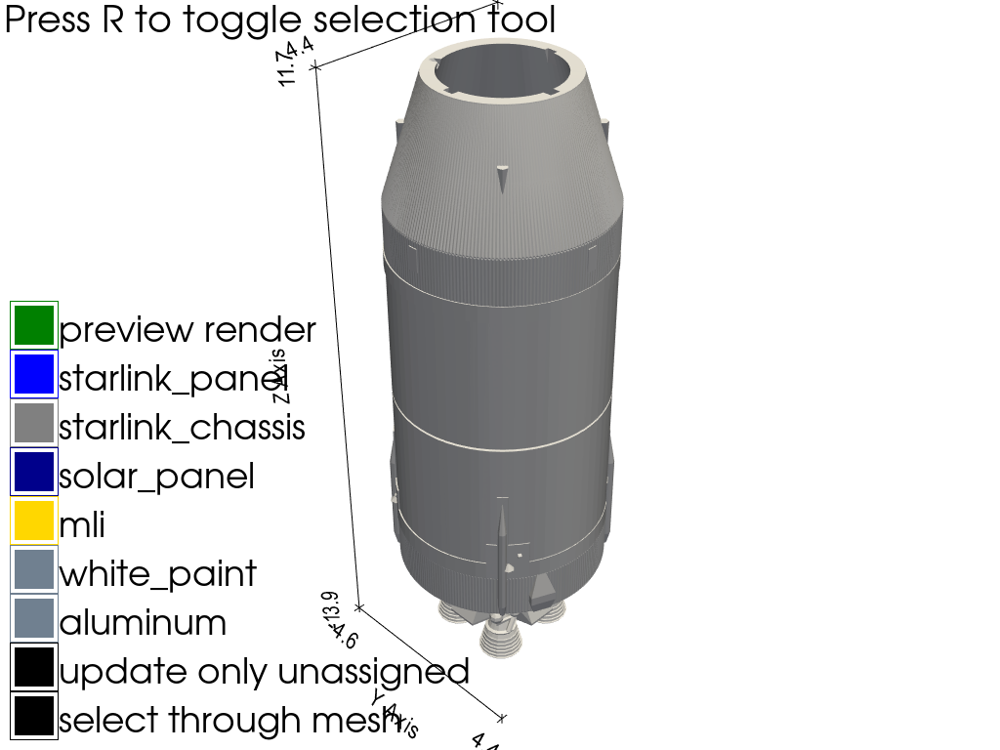

Note
Go to the end to download the full example code.
Model Editor#
A custom material assignment tool for creating accurate space object models based on a standard set of material definitions

import os
import numpy as np
import pyvista as pv
from matplotlib.colors import ListedColormap
from scipy.spatial import KDTree
import mirage as mr
ACCURATE_MODELS_DIR = os.environ.get(
'MIRAGE_ACCURATE_MODELS_DIR',
os.path.join(
os.environ['SRCDIR'],
'..',
'..',
'maintained-research',
'mirage-models',
'accurate_sats',
),
)
class Material:
"""Container for the BRDF parameters of a named material."""
def __init__(self, name: str, cd: float, cs: float, n: float, color: str = None):
"""Initialize a material with diffuse, specular, and color properties."""
self.name = name
self.cd = cd
self.cs = cs
self.n = n
self.color = color if color is not None else 'white'
def mtllib_str(self) -> str:
"""Return this material as an MTL library entry."""
return '\n'.join(
[
f'newmtl {self.name}',
'Ns 250.000000',
'Ka 1.000000 1.000000 1.000000',
f'Kd {self.cd:.6f} {self.cs:.6f} {self.n / 1000.0:.6f}',
'Ks 0.500000 0.500000 0.500000',
'Ke 0.000000 0.000000 0.000000',
f'Ni {self.n:.6f}',
'd 1.000000',
'illum 2\n',
]
)
def write_mtl_file(materials: list[Material]) -> None:
"""Write the material definitions to ``spacelib.mtl`` in ``MODELDIR``."""
with open(os.path.join(os.environ['MODELDIR'], 'spacelib.mtl'), 'w') as f:
header = '\n'.join(
['# Standard space materials', f'# Material Count: {n_mat}\n\n']
)
body = '\n'.join([mtl.mtllib_str() for mtl in materials])
body += f'\n{none_material.mtllib_str()}'
f.write(header)
f.write(body)
def write_obj_file(obj: mr.SpaceObject, materials: list[Material]) -> None:
"""Write the model and its per-face material assignments to an OBJ file."""
with open(
os.path.join(os.environ['MODELDIR'], f'matlib_{obj.file_name}'), 'w'
) as f:
f.write(f"# pyspaceaware OBJ File: '{obj.file_name}'\n")
f.write('mtllib spacelib.mtl\n')
f.write('o mesh1\n')
f.write('\n'.join([f'v {v[0]:.6f} {v[1]:.6f} {v[2]:.6f}' for v in obj.v]))
f.write('\n')
f.write(
'\n'.join(
[f'vn {fn[0]:.6f} {fn[1]:.6f} {fn[2]:.6f}' for fn in obj.face_normals]
)
)
cell_material_selected = point_material_selected[obj.f[:, 0]]
for i, mtl in enumerate(materials):
mtl_selected = np.argwhere(np.isclose(cell_material_selected, i)).flatten()
if mtl_selected.size > 0:
f.write(f'\nusemtl {mtl.name}\n')
f.write(
'\n'.join(
[
f'f {f[0] + 1}//{fni + 1} {f[1] + 1}//{fni + 1} {f[2] + 1}//{fni + 1}'
for f, fni in zip(obj.f[mtl_selected, :], mtl_selected)
]
)
)
unassigned_faces = np.argwhere(np.isnan(cell_material_selected)).flatten()
if unassigned_faces.size > 0:
f.write(f'\nusemtl {none_material.name}\n')
f.write(
'\n'.join(
[
f'f {f[0] + 1}//{fni + 1} {f[1] + 1}//{fni + 1} {f[2] + 1}//{fni + 1}'
for f, fni in zip(obj.f[unassigned_faces, :], unassigned_faces)
]
)
)
mr.set_model_directory(ACCURATE_MODELS_DIR)
obj = mr.SpaceObject('saturn_v_sii.obj')
tree = KDTree(obj._mesh.points)
point_material_selected = np.nan * np.zeros_like(obj._mesh.points[:, 0])
cell_material_selected = np.nan * np.zeros_like(obj.f[:, 0])
materials = [
Material('aluminum', 0.2, 0.6, 5, 'slategrey'),
Material('white_paint', 0.9, 0.1, 1, 'slategrey'),
Material('mli', 0.05, 0.8, 20, 'gold'),
Material('solar_panel', 0.15, 0.25, 10, 'darkblue'),
Material('starlink_chassis', 0.34, 0.40, 8.9, 'grey'),
Material('starlink_panel', 0.15, 0.25, 0.26, 'blue'),
]
none_material = Material('none', 1.0, 0.0, 0.0, 'white')
n_mat = len(materials)
_MATERIAL_VALS = tuple(range(n_mat))
_MATERIAL_CMAP = ListedColormap([mtl.color for mtl in materials])
_MATERIAL_CLIM = (0, max(_MATERIAL_VALS))
ONLY_UPDATE_UNASSIGNED = False
pl = pv.Plotter()
obj_actor = None
def render_obj(scale: float = 1.0):
"""Render the model at the requested scale using the current material colors."""
global obj_actor
obj._mesh.points = obj.v * scale
if 'obj' in pl.actors.keys():
pl.remove_actor('obj')
obj_actor = pl.add_mesh(
obj._mesh,
name='obj',
scalars=point_material_selected,
cmap=_MATERIAL_CMAP,
clim=_MATERIAL_CLIM,
nan_color='white',
show_scalar_bar=False,
)
def remove_selection():
"""Remove the current picking selection actors from the plotter."""
if '_picked_through_selection' in pl.actors.keys():
pl.remove_actor(pl.actors['_picked_through_selection'])
if '_picked_visible_selection' in pl.actors.keys():
pl.remove_actor(pl.actors['_picked_visible_selection'])
def toggle_through(state: bool) -> None:
"""Enable or disable picking through the model surface."""
remove_selection()
pl.disable_picking()
pl.enable_cell_picking(color='red', through=state)
def toggle_update_all(state: bool) -> None:
"""Control whether material edits only affect unassigned faces."""
global ONLY_UPDATE_UNASSIGNED
ONLY_UPDATE_UNASSIGNED = state
def set_picked_as_material(material_value):
"""Assign the currently picked faces to ``material_value``."""
global obj_actor
if pl.picked_cells is not None:
dtol = 1e-3
d, idx = tree.query(pl.picked_cells.points, k=10, distance_upper_bound=dtol)
old_pts_selected = point_material_selected.copy()
prev_unassigned_faces = np.isnan(np.sum(old_pts_selected[obj.f], axis=1))
point_material_selected[idx[d < dtol]] = material_value
if ONLY_UPDATE_UNASSIGNED:
reset_inds = ~np.isnan(old_pts_selected)
point_material_selected[reset_inds] = old_pts_selected[reset_inds]
updated_points = (old_pts_selected != point_material_selected) & ~(
np.isnan(old_pts_selected) & np.isnan(point_material_selected)
)
faces_of_updated_points = updated_points[obj.f]
if ONLY_UPDATE_UNASSIGNED:
face_updated = (
np.sum(faces_of_updated_points, axis=1) > 1
).flatten() & prev_unassigned_faces
else:
face_updated = (np.sum(faces_of_updated_points, axis=1) > 1).flatten()
cell_material_selected[face_updated] = material_value
obj_actor.mapper.set_scalars(
cell_material_selected,
str(np.random.rand()),
cmap=_MATERIAL_CMAP,
clim=_MATERIAL_CLIM,
n_colors=n_mat,
nan_color='white',
)
remove_selection()
_LEFT_LABEL_X = 60.0
_B_BUFFER = 10.0
_B_SIZE = 50
_B_NUM = 0
pl.add_checkbox_button_widget(
callback=toggle_through,
position=(_B_BUFFER, _B_BUFFER + _B_SIZE * _B_NUM),
value=True,
color_on='k',
color_off='w',
)
pl.add_text(
'select through mesh', position=(_LEFT_LABEL_X, _B_BUFFER + _B_SIZE * _B_NUM)
)
_B_NUM += 1
pl.add_checkbox_button_widget(
callback=toggle_update_all,
position=(_B_BUFFER, _B_BUFFER + _B_SIZE * _B_NUM),
value=True,
color_on='k',
color_off='w',
)
pl.add_text(
'update only unassigned', position=(_LEFT_LABEL_X, _B_BUFFER + _B_SIZE * _B_NUM)
)
_B_NUM += 1
for v, mtl in zip(_MATERIAL_VALS, materials):
pl.add_checkbox_button_widget(
callback=lambda x, v=v: set_picked_as_material(v),
position=(_B_BUFFER, _B_BUFFER + _B_SIZE * _B_NUM),
color_on=mtl.color,
color_off=mtl.color,
)
pl.add_text(mtl.name, position=(_LEFT_LABEL_X, _B_BUFFER + _B_SIZE * _B_NUM))
_B_NUM += 1
def update_model_scale(scale: float) -> None:
"""Re-render the model with a new scale and update the plot bounds."""
# print([x for x in dir(obj_actor) if 'point' in x.lower()])
render_obj(scale)
pl.show_bounds(
location='outer',
ticks='both',
n_xlabels=2,
n_ylabels=2,
n_zlabels=2,
)
update_model_scale(1)
toggle_through(True)
toggle_update_all(True)
# Keyboard callbacks
def view_x():
"""View the model along the x-axis."""
pl.view_yz()
def view_y():
"""View the model along the y-axis."""
pl.view_xz()
def view_z():
"""View the model along the z-axis."""
pl.view_xy()
def reverse_camera():
"""Mirror the camera position through the origin."""
pl.camera.position = -np.array(pl.camera.position)
pl.render()
pl.add_key_event('x', view_x)
pl.add_key_event('y', view_y)
pl.add_key_event('z', view_z)
pl.add_key_event('u', reverse_camera)
update_model_scale(1)
def preview_model(_) -> None:
"""Write the edited model and render a short preview animation."""
write_obj_file(obj, materials)
write_mtl_file(materials)
brdf = mr.Brdf('phong')
preview_obj = mr.SpaceObject(f'matlib_{obj.file_name}')
t = np.linspace(0, 2 * np.pi, 2000)
svb = mr.hat(np.array([np.sin(t), np.cos(t), np.cos(t) + np.sin(t)]).T)
mr.run_light_curve_engine(
brdf,
preview_obj,
svb,
svb,
instances=1,
frame_rate=20,
show_window=True,
verbose=True,
rotate_panels=True,
)
pl.add_checkbox_button_widget(
callback=preview_model,
position=(_B_BUFFER, _B_BUFFER + _B_SIZE * _B_NUM),
color_on='g',
color_off='g',
)
pl.add_text('preview render', position=(_LEFT_LABEL_X, _B_BUFFER + _B_SIZE * _B_NUM))
_B_NUM += 1
pl.show()
Total running time of the script: (0 minutes 1.163 seconds)